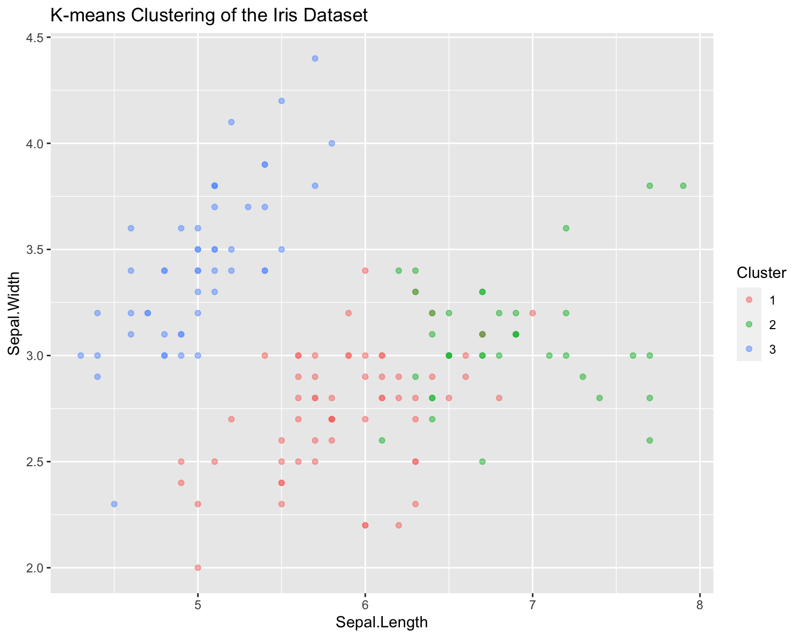
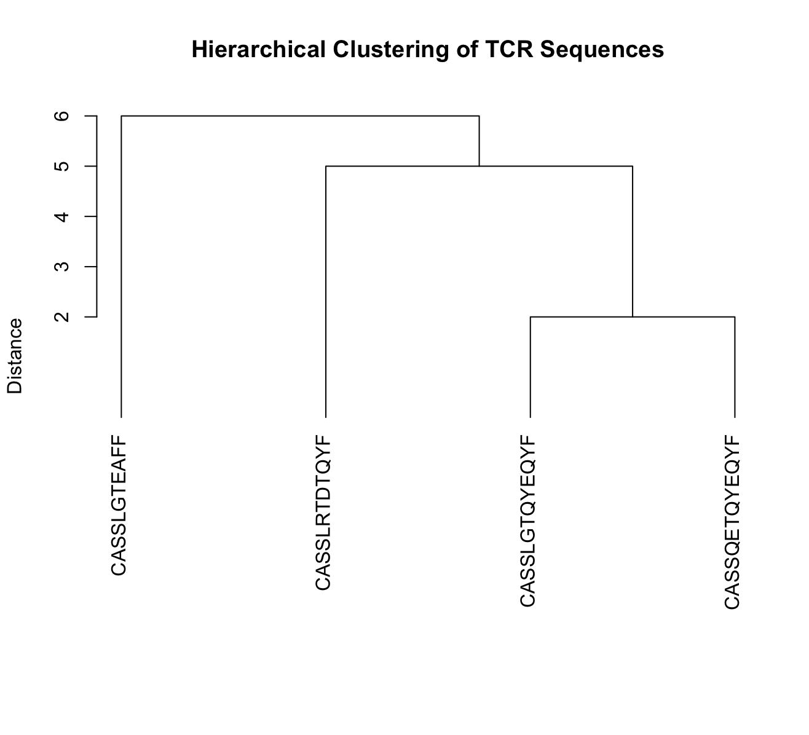
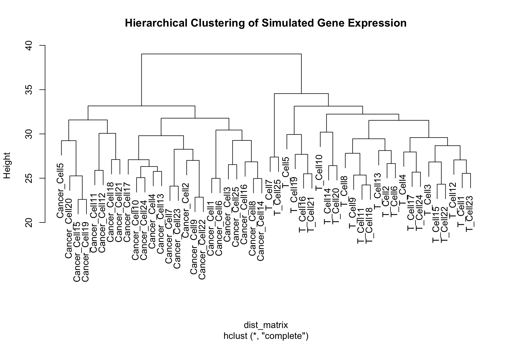
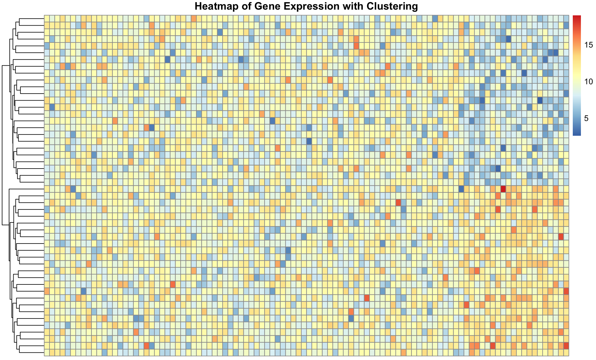
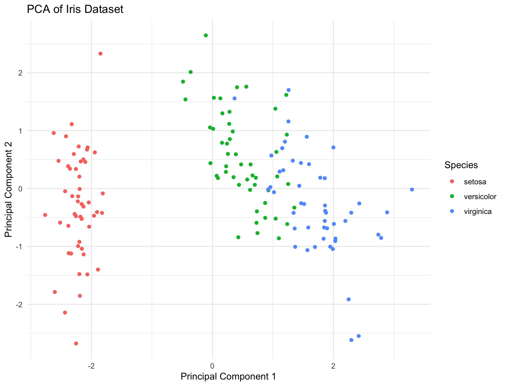
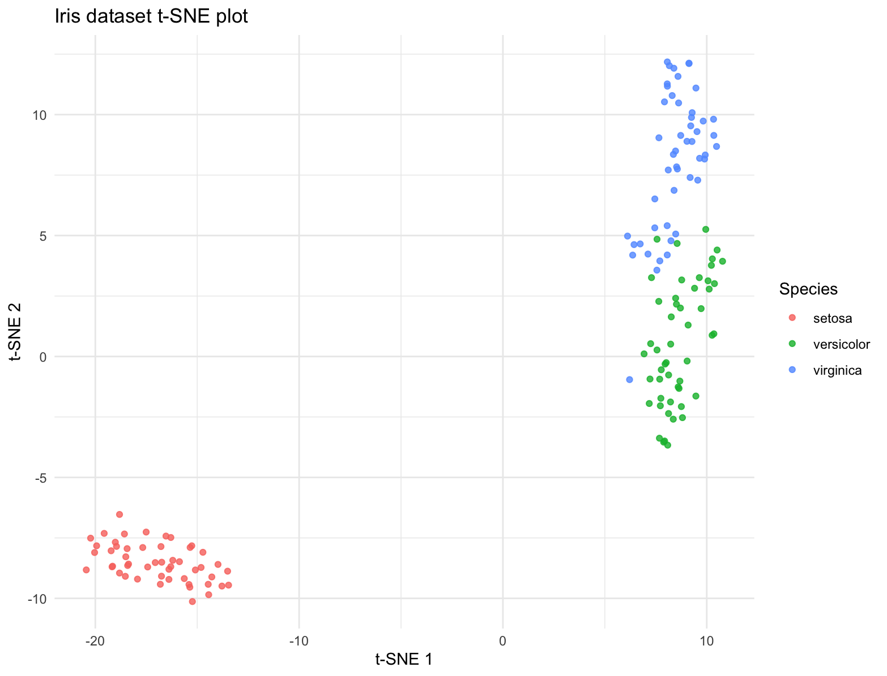
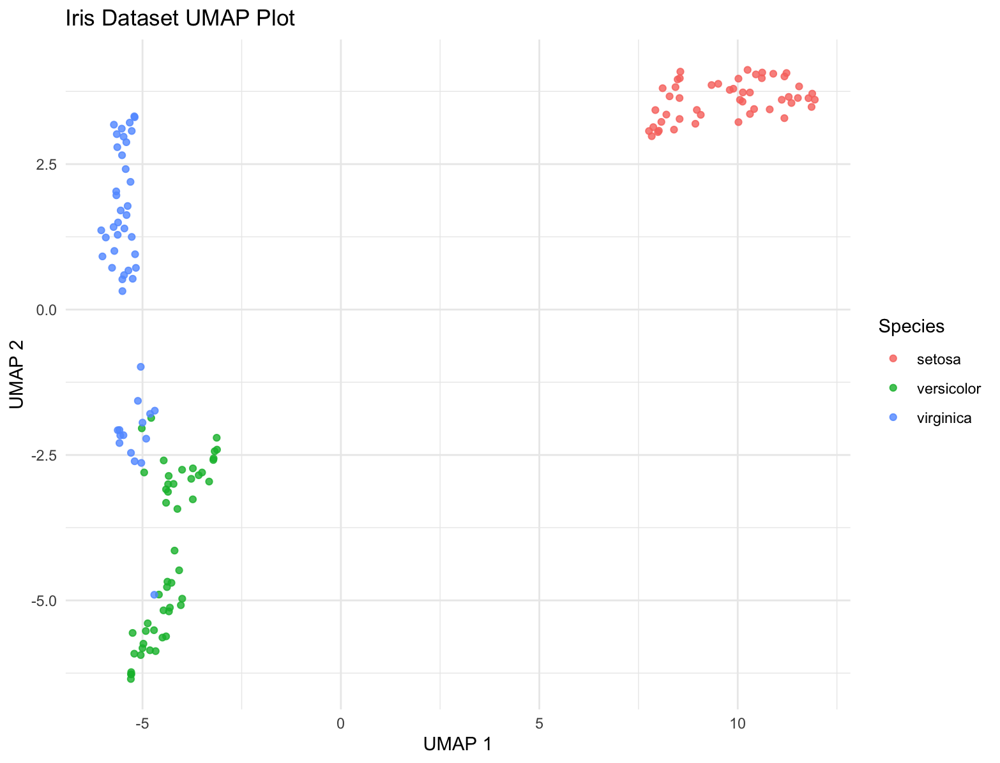
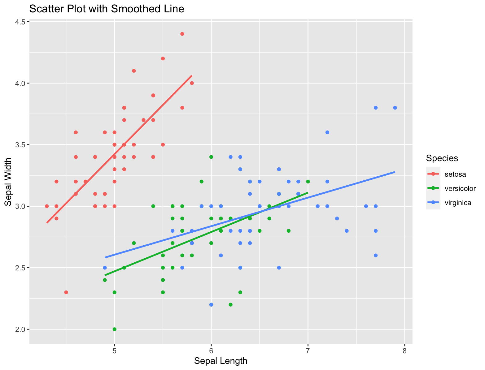
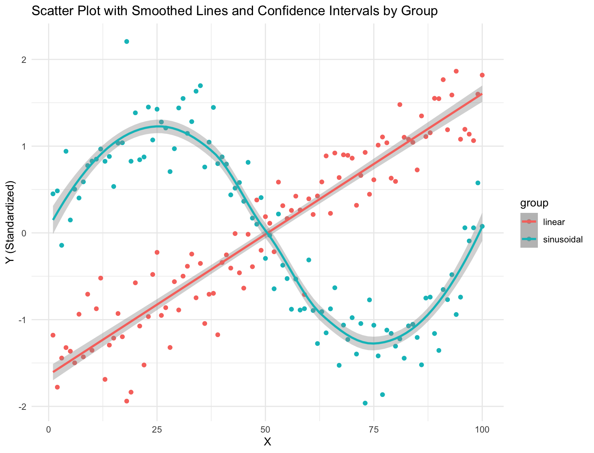
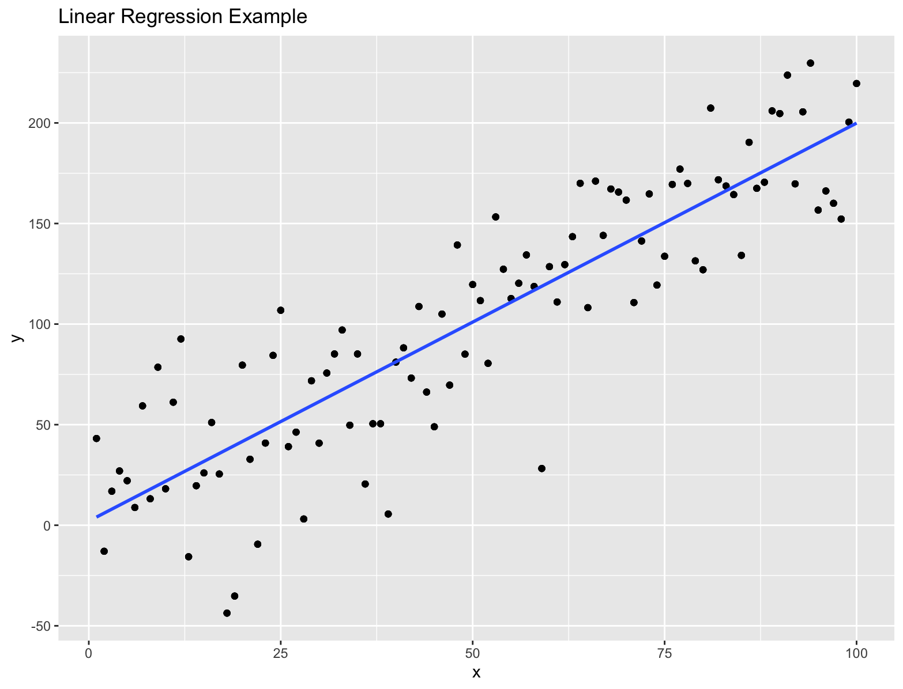

Clustering concepts and correlation
Distances
Understanding distance metrics is critical for clustering and dimensionality reduction because these techniques heavily rely on measuring the similarity or dissimilarity between data points. Distance metrics define how “close” or “far” two points are in the feature space, and they play a crucial role in determining the grouping of similar points in clustering algorithms and the preservation of local and global structures in dimensionality reduction techniques.
Manhattan Distance
Manhattan distance, or L1 distance, measures the distance between two points by summing the absolute differences of their Cartesian coordinates. It is equivalent to the total number of moves required to go from one point to another if only axis-aligned moves (up, down, left, right) are allowed, mimicking a city grid.
Considerations
- Less influenced by outliers compared to Euclidean distance.
- Useful in high-dimensional spaces.
Euclidean Distance
Euclidean distance, also known as the L2 distance, is the most common metric used to measure the straight-line distance between two points in Euclidean space. It is the default distance measure in many analytical applications.
Considerations
- Measures the shortest path between points.
- Sensitive to outliers.
- Used in default settings for many algorithms like K-means clustering.
dist in R
# Load the iris dataset
data(iris)
iris_numeric <- iris[, 1:4] # Exclude the species column
# Euclidean distance
euclidean_distances <- dist(iris_numeric, method = "euclidean")
# Manhattan distance
manhattan_distances <- dist(iris_numeric, method = "manhattan")Clustering
Clustering is a technique used to group similar objects or data points together based on their characteristics or features. For example, clustering can be applied to gene expression data to identify groups of genes that behave similarly under different experimental conditions. These clusters might ultimately inform cell types or subtypes. There are several different clustering techniques, including hierarchical or K-means clustering. It is important to understand the limitations or assumptions of a clustering algorithm when applying it to your data.
K-means clustering
K-means clustering is a popular unsupervised machine learning algorithm used for partitioning a dataset into a predetermined number of clusters. The goal of k-means clustering is to group data points into clusters such that data points within the same cluster are more similar to each other than to those in other clusters. The algorithm works iteratively to assign each data point to the nearest cluster centroid (center point of a cluster) and then update the centroid based on the mean of all data points assigned to that cluster. This process continues until the centroids no longer change significantly, or a specified number of iterations is reached.
K-means has some limitations, such as sensitivity to the initial random selection of centroids and the need to specify the number of clusters beforehand. Additionally, k-means may not perform well on datasets with non-spherical or irregularly shaped clusters.
Running on K-means on the iris data set:
# Load data
data(iris)
iris_data <- iris[, -5]
# Run k-means
set.seed(123)
kmeans_result <- kmeans(iris_data, centers = 3, nstart = 20)
# Results
print(kmeans_result)
table(Cluster = kmeans_result$cluster, Species = iris$Species)
# Visualization
library(ggplot2)
ggplot(iris, aes(Sepal.Length, Sepal.Width, color = factor(kmeans_result$cluster))) +
geom_point(alpha = 0.5) +
labs(color = 'Cluster') +
ggtitle("K-means Clustering of the Iris Dataset")
Heirarchical Clustering
Hierarchical clustering is a method used in unsupervised learning to group similar data points into clusters based on their pairwise distances or similarities. The main idea behind hierarchical clustering is to build a hierarchy of clusters, where each data point starts in its own cluster and pairs of clusters are progressively merged until all points belong to a single cluster.
The result of hierarchical clustering is often visualized using a dendrogram, which is a tree-like diagram that illustrates the hierarchical structure of the clusters.
Lets use hclust on a set of TCR sequences, where the distance between each sequence is defined as the edit distance. We can plot a dendrogram highlighting sequence similarity.
# Install and load necessary packages
if (!requireNamespace("stringdist", quietly = TRUE)) {
install.packages("stringdist")
}
library(stringdist)
# Define TCR sequences
tcr_sequences <- c("CASSLGTQYEQYF", "CASSLGTEAFF", "CASSQETQYEQYF", "CASSLRTDTQYF")
names(tcr_sequences) <- tcr_sequences # Use sequences as labels
# Calculate pairwise string distances using the Levenshtein method
dist_matrix <- stringdistmatrix(tcr_sequences, tcr_sequences, method = "lv")
# Perform hierarchical clustering using the complete linkage method
hc <- hclust(as.dist(dist_matrix), method = "complete")
# Plot the dendrogram
plot(hc, main = "Hierarchical Clustering of TCR Sequences", sub = "", xlab = "", ylab = "Distance",
labels = names(tcr_sequences), hang = -1) # Ensure labels hang below the plot
We can create a more complex simulated dataset of simulated single cell gene expression data. In this case, we have two cell types, and expect that the resulting dendrogram produced from the clustering should show clear differences between these cell types. Finally, we can plot the expression values in heatmap to visualize the difference between the genes across cells. The ordering of the rows is dictated by the dendrogram, drawing more similar cells closer together, allowing us to see the expression patterns that define each cell type.
# Install and load pheatmap if not already installed
if (!requireNamespace("pheatmap", quietly = TRUE)) {
install.packages("pheatmap")
}
library(pheatmap)
# Set seed for reproducibility
set.seed(42)
# Define parameters
num_genes <- 100
num_samples <- 50 # 25 T cells + 25 Cancer cells
# Simulate base gene expression
gene_expression <- matrix(rnorm(num_genes * num_samples, mean = 10, sd = 2),
nrow = num_genes, ncol = num_samples)
# Introduce differences in expression between the two groups
gene_expression[81:100, 1:25] <- gene_expression[81:100, 1:25] + 2 # T cells
gene_expression[81:100, 26:50] <- gene_expression[81:100, 26:50] - 2 # Cancer cells
# Label rows and columns
rownames(gene_expression) <- paste("Gene", 1:num_genes, sep = "")
colnames(gene_expression) <- c(paste("T_Cell", 1:25, sep = ""), paste("Cancer_Cell", 1:25, sep = ""))
# Transpose the gene expression matrix
transposed_gene_expression <- t(gene_expression)
# Creating a heatmap with clustering and annotation
pheatmap(transposed_gene_expression,
show_rownames = TRUE,
show_colnames = FALSE,
clustering_distance_rows = "euclidean",
cluster_rows = TRUE,
cluster_cols = FALSE,
main = "Heatmap of Gene Expression with Clustering") 
Dimensionality Reduction
Dimension reduction is a crucial step in analyzing high-dimensional data, such as gene expression data, where the number of features (genes) is large compared to the number of samples (experimental conditions). Dimension reduction techniques aim to simplify the data while preserving its essential structure, simplifying hundreds or thousands of features into a two-dimensional space. For clustering cell types or samples, this approach enables the identification of which genes are the most different across groups or clusters.
Principal Component Analysis (PCA)
PCA is a widely used dimension reduction technique that transforms high-dimensional data into a lower-dimensional representation by identifying the principal components that capture the maximum variance in the data. These principal components are orthogonal to each other and can be used to visualize the data in lower dimensions.
# Load necessary packages
library(ggplot2)
# Load data
data(iris)
iris_data <- iris[, 1:4]
# PCA
pca_results <- prcomp(iris_data, center = TRUE, scale. = TRUE)
print(summary(pca_results))
# Scatter plot of the first two PCs
pc_df <- data.frame(PC1 = pca_results$x[,1], PC2 = pca_results$x[,2], Species = iris$Species)
ggplot(pc_df, aes(x = PC1, y = PC2, color = Species)) +
geom_point() +
labs(title = "PCA of Iris Dataset",
x = "Principal Component 1",
y = "Principal Component 2") +
theme_minimal()
t-SNE
t-SNE (t-Distributed Stochastic Neighbor Embedding) is a dimensionality reduction technique commonly used in bioinformatics to visualize high-dimensional data, such as gene expression profiles or single-cell RNA sequencing (scRNA-seq) data, in a lower-dimensional space. t-SNE aims to preserve local structure and clusterings in the data by modeling similarities between data points in the high-dimensional space and embedding them into a lower-dimensional space. In t-SNE, similarities between data points are represented by conditional probabilities that two points are similar given their high-dimensional representations. t-SNE iteratively adjusts the positions of data points in the lower-dimensional space to minimize the difference between the conditional probabilities of pairwise similarities in the high-dimensional and low-dimensional spaces.
# Load the Rtsne package
library(Rtsne)
unique_iris <- unique(iris[, 1:4])
# Run t-SNE on the deduplicated data
set.seed(42) # for reproducibility
tsne_results <- Rtsne(unique_iris, dims = 2, perplexity = 30, verbose = TRUE)
# Create a data frame for plotting (assuming you want to include species labels)
tsne_data <- data.frame(tsne_results$Y)
# Assuming you want to add back the species information
# This assumes that species information was not a factor in duplicates
# If species data was part of the duplication, handle accordingly
species_data <- iris[!duplicated(iris[, 1:4]), "Species"]
tsne_data$Species <- species_data
# Plot the results using ggplot2
library(ggplot2)
ggplot(tsne_data, aes(x = X1, y = X2, color = Species)) +
geom_point(alpha = 0.8) +
labs(title = "Iris dataset t-SNE plot",
x = "t-SNE 1", y = "t-SNE 2") +
theme_minimal()
UMAP
UMAP (Uniform Manifold Approximation and Projection) is a modern technique for dimensionality reduction that is particularly useful for visualizing clusters or groups in high-dimensional data. Similar to t-SNE, UMAP focuses on preserving the local structure of the data but also tries to retain more of the global structure compared to t-SNE. UMAP is based on manifold learning and operates under the assumption that the data is uniformly distributed on a locally connected Riemannian manifold.
library(umap)
library(ggplot2)
# Load data
data(iris)
# Run UMAP
set.seed(42) # for reproducibility
umap_results <- umap(iris[, 1:4])
# Create a data frame for plotting
iris_umap <- data.frame(umap_results$layout)
iris_umap$Species = iris$Species
ggplot(iris_umap, aes(x = X1, y = X2, color = Species)) +
geom_point(alpha = 0.8) +
labs(title = "Iris Dataset UMAP Plot",
x = "UMAP 1", y = "UMAP 2") +
theme_minimal()
Correlation
Correlation measures the strength and direction of the relationship between two variables. In bioinformatics, correlation analysis is often used to explore relationships between gene expression levels across different samples or experimental conditions.
Spearman vs. Pearson Correlation
- Pearson Correlation: Measures the linear relationship between two variables. It assumes that the variables are normally distributed and have a linear relationship.
# Generate example data
set.seed(42)
x <- rnorm(100) # Generate 100 random numbers from a standard normal distribution
y <- x + rnorm(100, mean = 0, sd = 0.5) # Create y as a noisy version of x
# Calculate Pearson correlation coefficient
pearson_correlation <- cor(x, y, method = "pearson")
print(paste("Pearson correlation coefficient:", round(pearson_correlation, 2)))- Spearman Correlation: Measures the monotonic relationship between two variables. It does not assume linearity and is more robust to outliers and non-normal distributions.
# Generate example data
set.seed(42)
x <- rnorm(100) # Generate 100 random numbers from a standard normal distribution
y <- x + rnorm(100, mean = 0, sd = 0.5) # Create y as a noisy version of x
# Calculate Spearman correlation coefficient
spearman_correlation <- cor(x, y, method = "spearman")
print(paste("Spearman correlation coefficient:", round(spearman_correlation, 2)))geom_smooth
Simple example using iris.
library(ggplot2)
# Create a scatter plot with a smoothed line
ggplot(data = iris, aes(x = Sepal.Length, y = Sepal.Width, color = Species)) +
geom_point() + # Add scatter points
geom_smooth(method = "lm", se = FALSE) + # Add linear regression line
labs(title = "Scatter Plot with Smoothed Line", x = "Sepal Length", y = "Sepal Width")
Simulate data points from two groups and use geom_smooth with a different model for each group.
# Load required libraries
library(ggplot2)
# Generate example data
set.seed(42)
n <- 100 # Number of data points per group
x <- 1:n # x values
group <- rep(c("linear", "sinusoidal"), each = n) # Group labels
y <- c(0.5 * x + rnorm(n, mean = 0, sd = 5), # Group 'linear' with a linear trend
2 * sin(seq(0, 2 * pi, length.out = n)) + rnorm(n, mean = 0, sd = 0.5)) # Group 'sinusoidal' with a sinusoidal trend
# Standardize y-values within each group
y <- ave(y, group, FUN = scale)
# Create a data frame
df <- data.frame(x = rep(x, 2), y = y, group = rep(group, 2))
# Plot the data with smoothed lines and confidence intervals for each group
ggplot(data = df, aes(x = x, y = y, color = group)) +
geom_point() + # Add scatter points
geom_smooth(data = subset(df, group == "linear"), method = "lm", se = TRUE) + # Add linear smoothed line with confidence intervals
geom_smooth(data = subset(df, group == "sinusoidal"), method = "loess", se = TRUE) + # Add sinusoidal smoothed line with confidence intervals
labs(title = "Scatter Plot with Smoothed Lines and Confidence Intervals by Group", x = "X", y = "Y (Standardized)") +
theme_minimal()
Linear Regression
Statistical model to estimate the linear relationship between a dependent variable and a set of independent variables. The goal is find the best fit line by fitting the observed data to a linear equation.
# Generate example data with more noise
set.seed(42)
df <- data.frame(x = 1:100, # Independent variable
y = 2 * df$x + rnorm(100, mean = 0, sd = 30)) # Dependent variable with more noise
model <- lm(y ~ x, data = df)
# Visualize the data and fitted line
ggplot(df, aes(x = x, y = y)) +
geom_point() + # Add scatter points
geom_smooth(method = "lm", se = FALSE) + # Add fitted line
labs(title = "Linear Regression Example", x = "x", y = "y")
Example Code
# Load required libraries
library(ggpubr)
# Example dataframe
df <- data.frame(
Gene1 = c(1, 2, 3, 4, 5),
Gene2 = c(5, 4, 3, 2, 1),
Gene3 = c(2, 3, 4, 5, 6)
)
# Perform PCA
pca_result <- prcomp(df)
# Plot PCA
plot(pca_result$x[,1], pca_result$x[,2],
xlab = "PC1", ylab = "PC2",
main = "PCA Plot")
# Perform clustering
# Example clustering algorithm: k-means
kmeans_result <- kmeans(df, centers = 2)
# Plot clustering
plot(df, col = kmeans_result$cluster,
main = "Clustering Plot")
# Add correlation statistics to a plot
# Example plot
ggscatter(df, x = "Gene1", y = "Gene2",
add = "reg.line",
cor.coef = TRUE,
cor.method = "spearman",
cor.coeff.args = list(method = "spearman"))Additional Exercises
# Run PCA, t-SNE, and UMAP on the simulated gene expression data.
# CODE YOUR ANSWER HERE